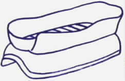
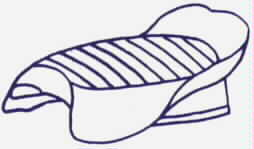

Summary:
This article covers the procedure to install the after-market seat covers sold by Old Britts.
Procedure:
First: Remove the original seat cover, trim strip and locating clips. Clean off any adhesive or edging from the seat pan. If the seat pan needs repainting, which is usually the case, do so now.

Second: After the seat pan has fully dried you are ready to install the seat cover. Start by aligning the seat cover centrally lengthwise over the seat with the sides turned up.

Third: Pull down the seat cover starting from the front of the seat.
Note: Sometimes a crease will occur due to packaging from the manufacturer. We have found that using an iron on a low setting will remove any crease. Place the iron on the inside (The fabric side) of the cover and just place pressure with the iron. Do not rub the iron back and forth and be careful not to melt the cover.
 Fourth: Locate into position the locating clips as shown.
Fourth: Locate into position the locating clips as shown.

 The locating clips as shown are positioned with the edge of the seat pan and the seat cover sliding into the right side of the clip. The left side of the clip is where the trim strip is inserted in the last step.
The locating clips as shown are positioned with the edge of the seat pan and the seat cover sliding into the right side of the clip. The left side of the clip is where the trim strip is inserted in the last step.
 Last: Fit the trim strip starting from the front on one side of the seat. The trim strip is fit into the left side of the locating clips and over the right side of the locating clips, the edge of the seat pan and the seat cover. Tap it into place with a hide hammer or something comparable. Trim off any surplus seat cover material from under the seat base.
Last: Fit the trim strip starting from the front on one side of the seat. The trim strip is fit into the left side of the locating clips and over the right side of the locating clips, the edge of the seat pan and the seat cover. Tap it into place with a hide hammer or something comparable. Trim off any surplus seat cover material from under the seat base.
This page was written and designed by F. H. Eaton & Associates if you have any questions or comments please contact us at eaton@oldbritts.com